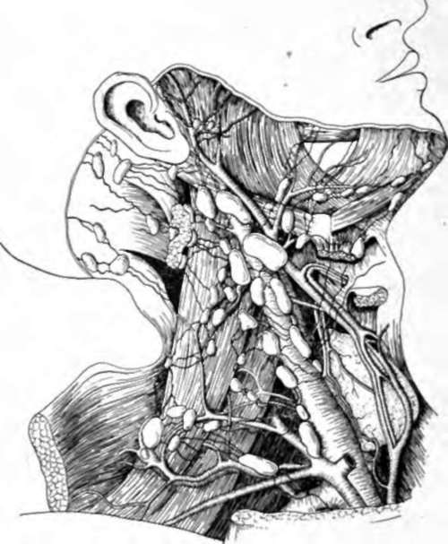
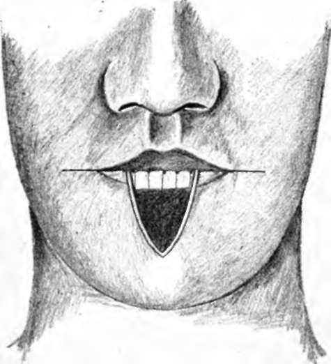
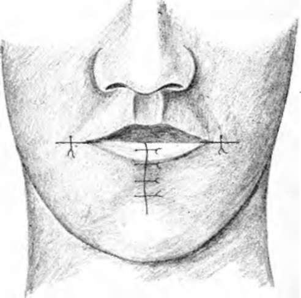

Treatment to Tumors of the Lips. Part 2
Description
This section is from the book "Skin Cancer", by Henry H. Hazen, A.B., M.D.. Also available from Amazon: Skin Cancer.
Treatment to Tumors of the Lips. Part 2
*Beckman: Jour. Oklahoma State Med. Assn., Oct., 1913.
In removing a section of lip which contains a basal-celled tumor or one of the malignant warts, or when the growth is small and recent, and there is a reasonable doubt that the lymphatics are involved, a local anesthetic is preferable to a general anesthetic. Cocaine (1 to 1,000) with adrenalin (1 to 10,000) in normal salt solution, or novocaine (J4 or l/2 percent) with adrenalin, are the most easily applied and the most satisfactory. The tissues on each side of the growth and the whole thickness of the lip well beyond the portion to be removed should be thoroughly infiltrated with the solution. The area to be excised should be outlined by a gentle scratch with the scalpel before the infiltration is begun, as infiltration distorts the appearance of the neoplasms and renders it difficult to recognize the boundaries; hence after operation it may be found that not enough margin has been given. Before making the incision it is an advantage for hemostasis to have an assistant compress the lip on each side between thumb and forefinger. The tissue removed is generally in the shape of a wedge, with the apex down in tumor of the lower lip and apex upward in the case of the upper lip. There is a divided coronary artery to be ligated on each side, catgut being used. Careful approximation of the skin and mucous membrane with linear continuity of the vermilion border of the lip is, of course, desirable, and is perhaps best done with fine silk or horse hair for stitches, using interrupted sutures.
Fig. 84.-This illustration, redrawn after Crlle. shows the relationship of the deep lyn phatics to the other structures of the neck. Note how closely they are associated with the jugular vein.
Fig. 86.-This figure and the following one show the common method of repairing a defect caused by the excision of a V-shaped piece of the lip.
Proper cleansing of the mouth and teeth before operation, giving special attention to pyorrhea alveolaris (in which case the gums should be cleansed and swabbed with tincture iodine), are important for prompt and cosmetic healing. The sutures in the skin had best be removed early, within two or three days, to prevent cross scars. The later spreading of the wound can be prevented by adhesive strips across the wound or a collodion dressing.
Because of the frequency of the prickle-celled cancer, all sections thus removed should be examined by an expert pathologist, and, if found to be true cancer, unless of the basal-celled type or of the noninfiltrating warty variety, the operation upon the neck should be done at an early date.
Various plastic operations are used in repairing the lip after the removal of a section. The avoidance of tension and the cosmetic resuit should determine which of the chiloplastics is to be used in a given ease. That generally used when a small lesion has been excised in the shape of a wedge is simple approximation of the edges. If the wedge removed has been a large one, and a great portion of the lip is missing, a horizontal cut can be made from the corner of the mouth upon one or both sides, carrying the incisions through the thickness of the cheek, and then the sides of the wedge drawn together without tension (Figs. 85, 86). Mayo's method of removing a quadrilateral section instead of a wedge is an improvement (Figs. 87, 88). In extensive growths, which have invaded the lip or cheek extensively, there can be no hard and fast rules for the chiloplasty (Figs. 89, 90, 91). It is most important to give the growth a wide margin and not sacrifice complete removal to the desire for an easy closure.
Fig. 86.-See Fig. 86.
As has been said above, there should preferably be no connection between the lines of incision for removal of a growth on the lip and the incision on the neck for the removal of the lymphatics. The older ingenious plastics, which combined flaps for the closure of gaps in the lip and exposure of field for removing cervical lymphatics, are obviously not to be recommended-first, because of the risk of infecting the entire field of operation from the buccal cavity, and, second, because the operation upon the cervical lymph glands cannot be complete enough.
In the hands of those expert enough in the use of local anesthetics, especially novocaine, extensive operations can be done upon the neck very satisfactorily without submitting the patient to the risk of a general anesthetic. The majority of surgeons, however, still prefer a general anesthetic for this part of the work. If the lip is done first, the gloves should be changed and fresh instruments and towels used for the second part of the operation upon the neck. It is generally advantageous to do the radical operation upon the neck first, and, after the neck incisions have been closed and protected, excise the portion of the lip containing the growth and repair the lip.
fear wM | ||
m | ||
Fig. 87.-This shows the incisions used at the Mayo clinic, both for the removal of the growth and the repair of the deformity. (Redrawn after Boeckman).
Extensive operations for cancer of the lip, as for cancer elsewhere-often in old men with arterial, renal, or myocardial changes -should never be undertaken without previous most careful examination of the patient's general condition and preliminary treatment according to the demands of the system.
Continue to:
Tags
bookdome.com, books, online, free, old, antique, new, read, browse, download